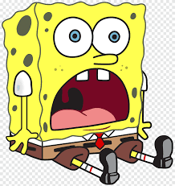

MY Blog Page
시맨틱 태그로 만들어진 페이지 입니다.
Links
MOZILA
HTML Dogs
HTML Dogs

스폰지밥
Semantic Tage
시맨틱 요소(Samantic elements)들은 브라우저에게 요소의 의미나 목적을 명확하게 알려주는 요소이다. 레이아웃을 만들때 쓰는 것. 의미가 있는 요소라면 div보다는 시맨틱 태그를 사용해준다.
div와 span
div은 "divide"의 약자로서 페이지를 논리적인 색션으로 분리하는데 사용 되는 태그이다. span 요소는 인라인 요소로서 텍스트를 위한 컨테이너로 사용할 수 있다.